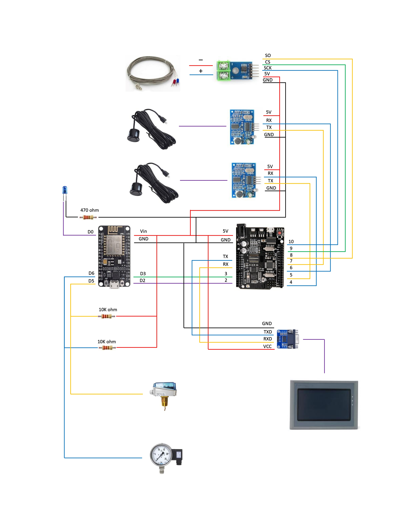

Automatic notification system, data collection of system problems and display values on the Touchscreen to speed up repairs. Reduce delays in the production process As a result, the company has increased productivity and reduce the work of machine operators
Lucky Star Weaving Company Limited, in the area of cleaner plastic cloth, has
developed creative products and services. Continuous standards that customers demand
and positive results from the factory's operations in the Cooperative Education Project in
Lucky Star Weaving Company Limited, in the Maintenance department needed a system to
automatically warn of problems in the Chiller water system, air dish, and soft water ball. It
was found that there were no stopping factors. Control targets are Chiller water level, water
cooler, soft water level, wind level, and water pump control. Emphasis will be placed on
engineers being able to control various normal things as soon as they are successful. Stop
working

The maintenance department can check this by conducting an automatic inspection
study. Problematic investigation and display the values on the screen Touch screen to
speed up the deceleration control system in a control system that the company has
efficient and Notified in advance by the machine operator who must know the office, report
the repair via Line Maintenance. The delay time in notifying the repair is reduced by
approximately 2 - 3 minutes, which is faster than the original repair notification using the
machine operator. Report repairs via Line Maintenance.